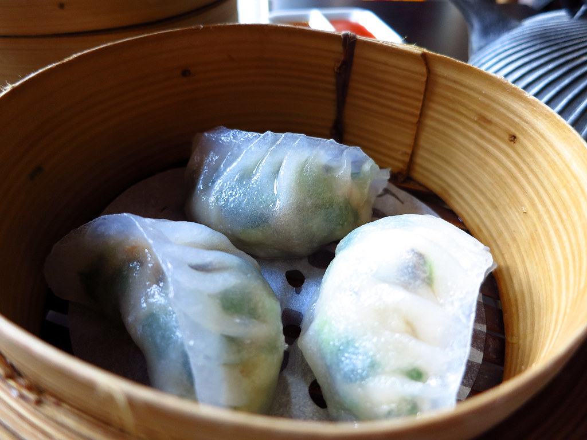

Pequim
Pato à Pequim
Conhecido pela pele assada e pelo serviço acompanhado de panquecas finas e condimentos, é um prato emblemático da capital.
Uma cozinha diversa
Não existe um único estilo de comida chinesa. Ingredientes locais, clima e costumes ajudaram a formar cozinhas regionais com preparos e sabores distintos.
Entre pratos conhecidos estão o pato assado associado a Pequim e o hot pot, refeição compartilhada em que ingredientes são cozidos à mesa em um caldo quente.
À mesa
Do preparo cuidadoso do pato assado à experiência coletiva de cozinhar no caldo, a refeição também conta histórias.
Pequim
Conhecido pela pele assada e pelo serviço acompanhado de panquecas finas e condimentos, é um prato emblemático da capital.

Costume à mesa
Uma panela de caldo fica no centro da mesa e cada pessoa cozinha ingredientes ao seu gosto. Há variações regionais, incluindo caldos picantes de Sichuan.

Cantão
Pequenas porções servidas em cestas ou pratos, com opções cozidas no vapor e fritas. O costume é associado à tradição cantonesa de refeições acompanhadas de chá.
Cozinhas regionais
Associada a Guangdong e à região de Guangzhou, é conhecida por variedade de ingredientes e preparos como dim sum.
Usa pimentas e especiarias marcantes; muitos pratos combinam ardor e o aroma característico da pimenta de Sichuan.
Além do pato assado, a capital reúne pratos de trigo, massas e influências de diferentes partes do país.
Arroz, peixes, frutos do mar e ingredientes sazonais aparecem em inúmeras preparações locais.
Os nomes regionais servem como ponto de partida: as receitas e os sabores também variam entre cidades, famílias e restaurantes.